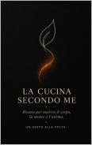
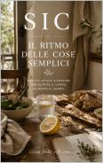
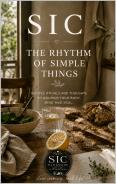

Chi sono
Una cucina vissuta. Una casa reale. Una cura semplice.Sono Sharol Pinna, autrice e fondatrice di SIC — Silenzio, Intenzione, Cura.
I miei libri nascono dal desiderio di riscoprire il valore della semplicità attraverso la cucina, la scrittura e la vita quotidiana.
Credo che la cucina sia molto più di un insieme di ricette: sia un linguaggio capace di raccontare emozioni, ricordi e modi di abitare la vita.
Nei miei libri condivido ricette, rituali e pensieri per invitare a rallentare, ad ascoltare e a ritrovare ciò che conta davvero.
Storie vere.
Vita vera.
SIC
Silenzio · Intenzione · Cura
SIC nasce dal desiderio di riportare bellezza nelle cose più semplici.
Attraverso la cucina. La scrittura. Gli oggetti fatti a mano. E quei piccoli rituali che trasformano la quotidianità in qualcosa di autentico.
Silenzio
Rallentare per ascoltare ciò che spesso resta sotto il rumore.
Intenzione
Ogni gesto nasce da una scelta, anche il più semplice.
Cura
La bellezza vive nelle piccole attenzioni quotidiane.
I miei libri
Edizioni italiane e inglesi
La cucina secondo me
Ricette semplici, gesti quotidiani e sapori che parlano di casa.

Il ritmo delle cose semplici
Ricette, pensieri e rituali per ritrovare lentezza e presenza.
Prima delle ricette
Il viaggio inizia ancora prima di accendere i fornelli.

The Rhythm of Simple Things
Recipes, rituals and reflections to nourish body, mind and soul.
Before the Recipes
The story behind every meaningful meal begins before the first ingredient.
Le cose semplici non sono mai piccole.
A volte sono proprio loro a custodire ciò che conta davvero.